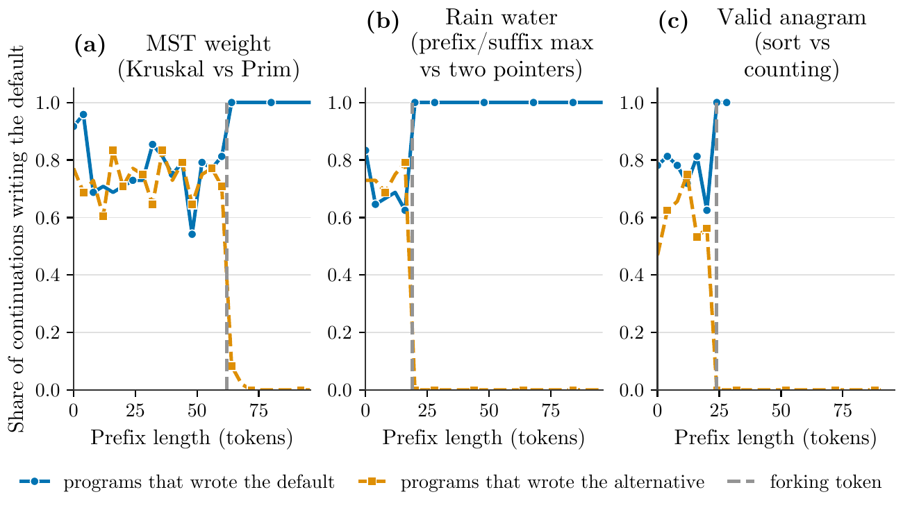
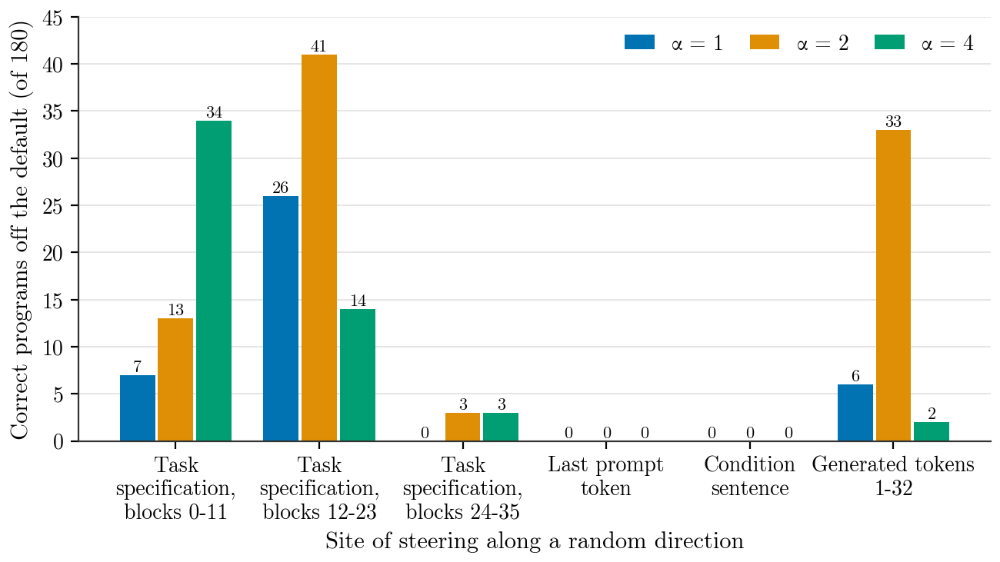

A single forking token fixes the algorithm a code model writes
TL;DRInstruction-tuned code models write the textbook algorithm almost every time: asked for a grid path search, Qwen3-8B wrote BFS in 1,199 of 1,200 programs. The paper asks where during generation that choice is made, and whether sampling temperature, the decoding parameter usually raised for variety, can change it. The choice is made at a single forking token. On the three tasks where the model writes two algorithms, knowing which kind of token it sampled there leaves at most 0.189 bits of uncertainty about the algorithm, down from 0.82 to 1.02 bits just before it. Temperature can only reweight that token’s options, while the prompt’s internal task specification states set its odds. No decoding parameter, instruction, ban or activation edit produced a new algorithm.
Contributions
Five claims, in the order the paper makes them. Each links to its evidence in the results.
-
One forking token fixes the algorithm
On the three Qwen3-8B tasks where the model writes two algorithms, the class of one generated token leaves at most 0.189 bits of entropy in the algorithm (95% CI 0.123 to 0.239). All three passed a preregistered 0.3-bit bar. A blind relocation found such tokens on two held-out gemma-3-4b-it tasks, not on Llama-3.1-8B-Instruct’s grid task.
See the evidence -
Temperature only reweights that token
Where the default leads at that token by 4.85 to 7.46 nats, no temperature from 0.3 to 1.3 changed the algorithm of any of 20 seeds on three tasks, while phrasings multiplied. Predicting the size of the temperature effect from that token’s logits worked on one of the three mixed tasks.
See the evidence -
The task specification states set its odds
Random perturbations of those internal states changed the algorithm in 55% of seeds on two tasks, across one unperturbed and three perturbed runs (pooled difference from temperature over seeds 0.545, 95% CI 0.41 to 0.67; preregistered). Patching in the states of a prompt that names the alternative wrote it on 30 of 30 seeds.
See the evidence -
Post-training widened the margin at that token
Against Qwen3-8B-Base, post-training widened the default’s margin at the forking token by 2.11 to 13.41 nats on three collapsed tasks, on which the model writes one algorithm.
See the evidence -
No route produced a confirmed new algorithm
Context seeds, novelty instructions and bans moved the choice only among known algorithms, and none of 45,892 audited correct programs was new; a program search with an evaluator gave eight programs one reader classed as new, which its replication did not reproduce.
See the evidence
Method
The question needs two things: a label for the idea a program implements, which diversity metrics that score text do not give, and a way to hold sampling noise fixed while an intervention changes, which independent samples do not give. The paper gets the first by running every program and the second by reusing the same random numbers in every condition.
![Three-panel overview. (a) The prompt to Qwen3-8B and the shared 61-token opening of its program fork at one token: ␣Kr (p = 0.72) leads to Kruskal’s algorithm and ␣Prim (p = 0.27) to Prim’s; the algorithm’s entropy drops from 0.82 to 0.050 bits, and is at most 0.189 bits on all three mixed tasks. (b) On minimum spanning tree weight, stacked bars of the share of programs show Prim rising from 0.07 at T = 0.3 to 0.31 at T = 1.3; on shortest path a log-probability gauge puts Dijkstra 4.85 nats above the runner-up, and 0 of 20 seeds change from T = 0.3 to 1.3. (c) The prompt’s tokens enter Qwen3-8B’s 36 blocks from below; the states of its task specification tokens are patched at every block from the prompt ‘Implement Prim’s algorithm’, and the output leaving the top of the last token’s column is ␣Prim: Prim on 30 of 30 seeds. No intervention added a third algorithm.](figures/fig1_v0.jpg)
␣Kr leads to Kruskal (blue) and ␣Prim to Prim (orange). (b) Temperature only reweights them; on shortest path, Dijkstra’s 4.85-nat lead holds all 20 seeds. (c) Patching in task specification states (green) gives Prim on 30 of 30 seeds. Drawn overview; numbers from Section 5.The starting observation
Ask an instruction-tuned code model to implement a path search and it writes BFS, breadth-first search; ask for a weighted shortest path and it writes Dijkstra’s algorithm. Across six independent baselines, Qwen3-8B wrote BFS in 1,199 of 1,200 programs for grid path search and Dijkstra in 1,174 of 1,200 programs for shortest path. It wrote one algorithm in at least 49 of 50 programs on each of 13 further tasks derived from LeetCode, and eight more open-weight configurations wrote BFS or DFS, depth-first search, on the grid task.
This matters because the algorithm fixes a program’s complexity and failure modes. The usual remedies change how the model samples or what it reads: raise the sampling temperature, truncate the distribution differently, add randomness to the input, or forbid the techniques of earlier solutions. Whether such an intervention changes the idea or only its wording is rarely measured. Resampling studies have found forking tokens, positions at which resampling the continuation changes the outcome sharply, but those studies concern answers to reasoning problems. Where a code model chooses the algorithm it implements had not been located.
In, through, out
- In
- A coding task in five prompt templates, sometimes with a condition sentence such as a ban, and a model that samples programs: mainly Qwen3-8B in non-thinking mode at temperature 1.
- Through
- Every program runs against hidden tests and is labelled with the algorithm it executes. Prefixes are resampled to find where that label is decided, interventions are compared on shared random numbers, and the prompt’s internal states are perturbed or patched.
- Out
- The share of each algorithm under each condition, the position and odds of the deciding token, the number of seeds whose algorithm changes, and a novelty audit of every correct program outside the catalogue.
1Label each program by what it executes
Each task has a catalogue of three to ten known algorithms. A program is correct if it passes all of its task’s hidden tests (40 to 48 per path task, 684 across the 13 bench tasks) in a sandbox with a time limit per test case. A runtime tracer of operations on data structures, grid reads, edge relaxations and recursion assigns the mechanism; rules over the abstract syntax tree assign a second label; and a blind language-model judge sees only programs on which the two disagree. The combined label agreed with adjudicated gold labels at Cohen’s kappa 0.966 on the path tasks. A program matching no catalogue entry is labelled other and audited for novelty.
Tasks, defaults and catalogues
| Task | Default | Catalogue |
|---|---|---|
| Grid path search | BFS (gemma-3-4b-it: DFS 70%) | BFS, DFS, iterative deepening DFS, A*, greedy best first search, bidirectional BFS, Dijkstra with unit weights, IDA*, jump point search, bidirectional A* |
| Weighted shortest path | Dijkstra | Dijkstra, Bellman-Ford or SPFA, bidirectional Dijkstra, Floyd-Warshall, Dial |
| k-th smallest element | full sort | full sort, size-k heap, heapify and pop, quickselect, median of medians, counting sort |
| Substring search | naive scan (gemma-3-4b-it also) | naive scan, KMP, Rabin–Karp, Z algorithm, Boyer–Moore–Horspool, library find |
| Two sum | hash map | hash map, sort and two pointers, brute force, sort and binary search |
| Find the duplicate | hash set | hash set, sort and compare neighbours, Floyd cycle detection, binary search on values, index marking |
| Connected components | union–find | BFS, DFS, union–find, label propagation |
| First and last position | binary search (gemma-3-4b-it: linear scan) | binary search, bisect module, exponential search (gemma-3-4b-it adds linear scan) |
| Minimum spanning tree weight | Kruskal (0.80) | Kruskal, Prim with a heap, Prim with an array scan, Borůvka |
| Trapped rain water | prefix and suffix maxima (0.68) | two pointers, prefix and suffix maxima, monotonic stack, split at the highest bar |
| Valid anagram | sort and compare (0.77) | sort and compare, hash map of counts, fixed 26-slot count array |
Every labeller was checked before use on reference implementations of every catalogue algorithm and on mutated programs that must fail the hidden tests. On the path tasks the runtime tracer and the syntax rules each labelled 22 of 22 references correctly; on evaluation gold sets runtime and syntax labels agreed at kappa 0.753, the runtime label agreed with adjudication at 0.843 and the combined label at 0.966 (the runtime label missed the accuracy targets of that first gate, so every disagreement between the two labels went to the blind judge). On the 13 bench tasks all 54 references passed at no more than a quarter of their time limits, 39 mutants failed, and runtime and syntax labels agreed at kappa 0.84 to 1.00.
2Find the token where the algorithm is decided
Following the Forking Paths method, prefix resampling keeps the first j generated tokens of a program the model sampled itself, for j = 0, 4, 8 and onward, draws 8 continuations at temperature 1 from each prefix, labels them, and tracks the distribution of algorithms. A Bayesian change-point model with a permutation null marks where the share of the program’s own algorithm jumps by at least 0.4, and 20 further continuations there and at control positions confirm it. The confirmed position is the fork; the tokens before it are the opening.
At the fork, the paper reads the teacher-forced next-token distribution and groups candidate tokens into classes by the algorithm that continuations forced to begin with them write. The entropy H(A | C) of the algorithm given the class of the sampled forking token measures how much of the choice that one token settles.
3Compare interventions on the same random numbers
Paired comparisons use common random numbers. Each sample slot, called a seed, owns one stream of uniform random numbers, and the sampler maps the tempered next-token distribution to a token by inverse-CDF lookup, so two programs from one seed differ only by the condition. The analysis counts the seeds whose algorithm differs across a set of conditions, compares paired outcomes with exact McNemar tests on discordant seeds, and tests contrasts over seeds by sign flips.
4Predict temperature’s effect before sampling
The forking-token prediction at temperature T composes three parts: the tempered probability of staying on the opening, the tempered distribution over forking tokens, and the algorithm each forking token leads to. It was committed by its hash before any sample at the target temperatures. It is scored by the total variation distance between predicted and observed algorithm distributions, averaged over T = 0.3, 0.7, 1.0 and 1.3, against a baseline that predicts no change, tempering of the shares themselves, and a variant placed at the position of highest entropy. On collapsed tasks the paper reads the forking-token margin: the gap in log probability, in nats, between the default’s token class and the strongest alternative class.
5Perturb and patch the prompt’s internal states
Prompt
Program
A prompt has a condition sentence (empty, neutral, or a ban naming algorithms not to use), a task specification (problem statement and function signature) and a last token, from whose state the first generated token is predicted. The residual stream states at the task specification’s tokens are its task specification states. Each ban has a control prompt of the same length, in tokens, whose condition sentence is neutral filler: irrelevant nouns replace the algorithm names.
Steering along a random direction, a form of activation steering, writes a random unit direction into the residual stream during the prompt pass only. At each block and task specification position, the component along that direction, measured from the control prompt’s state, is set to α times the norm of the displacement that the ban sentence itself produces there. The intervention strength α is thus a multiple of the displacement the ban sentence produces at that site: α = 1 is a random displacement of the size that a one-sentence ban causes. Unless stated, steering is applied at blocks 12 to 23. Activation patching replaces the task specification states of a prompt, at every block, with those of another prompt of the same length, for example Implement Prim's algorithm patched into a control prompt of the same length in which filler tokens stand in place of the instruction tokens. A random replacement of matched norm serves as a baseline.
6Count ideas, phrasings and novelty
Diversity is the effective number of algorithms among correct programs: the exponential of the Shannon entropy of their algorithm labels, that is, the Hill number of order 1 (Hill, 1973), rarefied to subsamples of 25. Phrasings are clusters of programs whose AST 4-gram shingles, after identifiers are normalised, reach a Jaccard similarity of 0.8. A correct program labelled other counts as novel only if, after stress tests, a comparison with its nearest known solutions by tree edit distance, two blind judges gated on known control programs and a full manual read, it implements no known algorithm. With none among n programs, the rule of three bounds the rate by 3/n.
Models, tasks and audit trail
- Models
- Qwen3-8B in non-thinking mode at temperature 1, in bfloat16 with exact common random numbers, and in some experiments in a W8A8 engine, with 8-bit floating-point weights and activations, on smaller GPUs; the perturbation results hold in bfloat16. Qwen3-8B was chosen because it is an open-weight, instruction-tuned model that runs on one GPU in bfloat16 with exact common random numbers and activation edits, has thinking and non-thinking modes, and has a released base model: Qwen3-8B-Base serves for the base comparison, and gemma-3-4b-it, gemma-3-4b-pt and Llama-3.1-8B-Instruct as further families. The ban experiments add Qwen3-14B and Qwen3-32B in thinking and non-thinking mode, gemma-3-27b-it and the code model Qwen2.5-Coder-32B-Instruct, so that obeying a ban can be compared across model size, thinking mode, family and code training.
- Tasks
- Two path search tasks follow a public set of creativity probes for code models: grid path search with moves to the four neighbouring cells, where any valid path is accepted so BFS is not forced, and weighted shortest path between one pair of nodes on a directed graph. Thirteen bench tasks derived from LeetCode problems, such as k-th smallest element, two sum and connected components, carry 684 hidden test cases and references for 54 algorithms. Sixteen further tasks, among them minimum spanning tree weight, trapped rain water and valid anagram, were built the same way. Each task has five prompt templates; the paper’s Appendix A gives each task group’s input, expected output, tests and labelling, and quotes a prompt in full.
- Audit trail
- Every decisive rule and prediction was committed by its hash, in a SHA-256 chain, before the samples it governs; every headline number was recomputed from raw rows by an independent script; and placebo versions of each test were checked to fail. Code, prompts, raw generations, labels and the scripts that recompute each number are in the paper’s code repository, and Code for each result links each result to the folder of the experiment that produced it.
- Compute
- Each experiment fits on one GPU, such as an RTX 4090 or an RTX 2000 Ada, in about 1 to 3 hours of GPU time, with vLLM for unpaired sampling.
Terms used on this page
- Default
- For a given model, the algorithm it writes most often for a task.
- Mixed, collapsed
- A task is mixed for a model that writes two algorithms, each in a substantial share of programs, and collapsed for one that writes one algorithm in nearly all of them.
- Forking token, fork, opening
- A forking token is a position at which resampling the continuation changes the outcome sharply (Bigelow et al., 2025). The fork is the confirmed position at which the algorithm is decided; the opening is the tokens before it, which the sampled programs share.
- Margin
- At the fork, the gap in log probability, in nats, between the default’s token class and the strongest alternative class.
- Seed
- A sample slot with its own stream of uniform random numbers, reused in every condition.
- Control prompt of the same length
- A prompt with as many tokens as a ban or instruction prompt: for a ban, a neutral filler sentence with irrelevant nouns in place of the algorithm names; for patching, filler tokens in place of the instruction tokens.
- Steering along a random direction, intervention strength α
- Activation steering along a random direction in the task specification states. α is a multiple of the displacement that the ban sentence produces at the same site, so α = 1 is a displacement of the size that a one-sentence ban causes.
- Effective number of algorithms
- The exponential of the Shannon entropy of the algorithm labels of correct programs, the Hill number of order 1; a value of 1 means every correct program uses the same algorithm.
Results
Headline numbers first, each with what it was measured on and what it is compared against. The six findings follow in the paper’s order, numbered as in the PDF.
Headline numbers
-
At most0.189bits
Entropy of the algorithm once the class of the forking token is known
- Measured on
- Qwen3-8B, its three mixed tasks: 0.050, 0.153 and 0.189 bits
- Compared with
- 0.82 to 1.02 bits at the fork before the token is sampled; preregistered bar 0.3 bits
-
0of 20 seeds
Changed algorithm under any temperature from 0.3 to 1.3
- Measured on
- Qwen3-8B, shortest path, k-th smallest and grid path, shared seeds; upper 95% bound per seed 0.17
- Compared with
- Steering along a random direction at α = 1: 17.25, 4.55 and 2.5 of 20 seeds
-
0.545
Pooled difference between steering along a random direction and temperature in the share of seeds whose algorithm changed (95% CI 0.41 to 0.67)
- Measured on
- Shortest path and k-th smallest, one unperturbed and three perturbed runs per seed; preregistered
- Compared with
- Temperature, which changed no seed; sign-flip p = 1.0 × 10−5
-
30of 30 seeds
Wrote the minority algorithm after the task specification states of a prompt naming it were patched in
- Measured on
- Each of the three mixed tasks; every patched program correct
- Compared with
- 7, 4 and 0 of 30 for the control prompt of the same length; 12, 4 and 0 for a random replacement of matched norm
-
2.11 to 13.41nats
Widening of the default’s margin at the forking token by post-training
- Measured on
- Qwen3-8B against Qwen3-8B-Base on three collapsed tasks: 2.11 shortest path, 3.27 grid path, 13.41 connected components
- Compared with
- An entropy difference of only 0.23 to 0.31 nats at phrasing positions
-
0of 45,892
Audited correct programs that implemented a new algorithm
- Measured on
- Nine experiments whose audits cover all of their correct programs
- Bound
- Rule of three: 0.007% per program
5.1One forking token fixes the algorithm
On the three mixed tasks of Qwen3-8B, sampled programs share an opening of 18 to 61 tokens, and the next token settles the algorithm. Along the opening, the share of continuations writing the default stays between 0.47 and 0.96; at the forking token it jumps to 1 or 0. The preregistered test required the algorithm’s entropy given the class of the forking token to be at most 0.3 bits on at least two tasks. It passed on all three: 0.050 bits (bootstrap 95% CI 0.014 to 0.096) on minimum spanning tree weight, 0.153 (0.091 to 0.203) on trapped rain water and 0.189 (0.123 to 0.239) on valid anagram, against 0.82, 0.97 and 1.02 bits at the fork before the token is sampled. On the least decisive task the margin to the bar is −0.111 bits (95% CI −0.177 to −0.061).
Worked example: minimum spanning tree weight, Qwen3-8B
Opening61 tokens shared by the sampled programs, ending with a comment marker
␣Kr0.72after which every continuation writes Kruskal’s algorithm␣Prim0.27after which 97% write Prim’s
Next-token probabilities at the fork; ␣ marks a leading space.
| Task (model) | Opening (tokens) | Forking token (probability) → algorithm | H at fork | H given token [95% CI] | Blind relocation |
|---|---|---|---|---|---|
| Minimum spanning tree weight (Qwen) | 61 | ␣Kr (0.72) → Kruskal; ␣Prim (0.27) → Prim | 0.82 | 0.050 [0.014, 0.096] | 0.004 |
| Trapped rain water (Qwen) | 18 | ␣n → prefix/suffix maxima; ␣left → two pointers | 0.97 | 0.153 [0.091, 0.203] | below 0.001 |
| Valid anagram (Qwen) | 23 | ␣return → sort; ␣count → counting | 1.02 | 0.189 [0.123, 0.239] | below 0.001 (count branch) |
| Substring search (Gemma, held out) | 31 | for (0.73) → naive scan; try (0.10) → library call | – | – | 0.001 |
| First and last position (Gemma, held out) | 12 | first (0.95) → linear scan; left (0.05) → binary search | – | – | 0.001 |
| Grid path search (Gemma) | 32 | ␣visited → DFS; blank line, if, queue → BFS | – | – | – |
| Grid path search (Llama, held out) | 52 | ␣visited (0.45) → DFS; ␣queue (0.25) → BFS | – | – | 0.629 |
A blind locator on fresh samples recovered the forks of minimum spanning tree weight and trapped rain water and, on valid anagram, the next decision inside the counting branch (at most 0.004 bits), and found single forking tokens on two held-out gemma-3-4b-it tasks (0.001 bits each), and Gemma’s grid task forks the same way. Collapsed tasks have forks too, which surface in perturbed and banned samples.
The fork is not universal. On Llama-3.1-8B-Instruct’s grid task the openings that reach a forking token cover about 2% of programs, and the algorithm keeps 0.63 bits given the located decisions. On weighted shortest path, perturbed generations stay undecided for at least 60 tokens, and on k-th smallest the algorithm is fixed before the first generated token. Where a fork exists, it is a high-entropy position.
View Figure 2: the resampling curves
Forks on collapsed tasks, and how forks relate to entropy
On Qwen3-8B’s connected components, a collapsed task, the fork appears in perturbed and banned samples: after ␣def the token ␣dfs writes DFS and ␣find union–find, and forcing ␣def␣dfs after the control prompt of the same length gives correct DFS on 30 of 30 seeds. Resampling with no prefix kept reproduced each mixed task’s baseline minority share (Fisher p 0.19 to 0.58).
On Gemma’s grid task, BFS follows ␣visited in 1.1% of 1,409 continuations and the other forking tokens in 95% to 100%. A fork lies above the 90th percentile of per-token entropy in all 209 samples that reach it, though it is not always the single position of highest entropy.
5.2Temperature only reweights the forking token
If one token decides, temperature can act on the algorithm only through that token’s distribution and the probability of reaching it. Lowering the temperature from 1.0 to 0.3 removed the minority algorithm in paired seeds as predicted: all 18 discordant seeds moved to the default on minimum spanning tree weight (exact McNemar p = 3.8 × 10−6), as did all 10 on Gemma’s substring search and all 13 on its first and last position.
The prediction’s mean total variation distance from the observed shares was 0.014 to 0.054 on five of six tasks, under the preregistered bar of 0.10, and 0.142 on Llama’s grid task, whose many openings it does not model. Predicting no change was almost as good. The forking-token prediction beat it on only 4 of 6 tasks (exact sign test p = 0.34), though it beat tempering of the shares themselves and the variant at the position of highest entropy on 5 of 6. A simpler prediction from the forking token alone, committed before sampling on the three mixed tasks, matched the observed response only on minimum spanning tree weight, one task against the two its test required. The forking token explains the direction and mechanism of temperature’s effect, but not yet its size.
View Figure 3: prediction against observation at four temperatures
On collapsed tasks the forking-token margin puts the alternative out of reach. On the control prompt of the same length the default leads the strongest alternative by 7.46 nats on grid path search, 4.85 on shortest path, 17.04 on connected components and 6.10 on k-th smallest. At T = 1.3 these margins imply rates of leaving the default of 0.002, 0.020, below 0.0001 and 0.009, and 100 continuations from each fork at T = 1.3 gave none. Table 2 tests the consequence with a preregistered design on shared seeds.
| Conditions compared | Shortest path (Dijkstra) | k-th smallest (full sort) | Grid path (BFS) |
|---|---|---|---|
| Temperature 0.3 to 1.3 (top-p 1) | 0 | 0 | 0 |
| … plus top-k 10 at T 0.7 | 0 | 0 | 0 |
| … plus min-p 0.1 at T 2.0 | 1 | 1 | 0 |
| Thinking mode, T 0.3 to 1.3 | 0 | – | 0 of 10 |
| Random direction, α = 1 | 17.25 | 4.55 | 2.5 |
| Random direction, α = 2 | 19.05 | 10.6 | 8.7 |
| Contrast at α = 1 [95% CI] | 0.863 [0.775, 0.943] | 0.228 [0.090, 0.380] | 0.125 [0.025, 0.225] |
No temperature from 0.3 to 1.3 changed the algorithm of any seed on any task (upper 95% confidence bound on the rate per seed 0.17), in thinking mode either, although phrasings per algorithm grew with T (pooled slope 0.64 per unit temperature in log phrasings at a Jaccard threshold of 0.7, 95% CI 0.30 to 0.89). Under the same seeds, steering along a random direction at α = 1 changed the algorithm, somewhere among the unperturbed run and three perturbed runs, for 17.25 of 20 seeds on shortest path (to Bellman-Ford or SPFA) and 4.55 on k-th smallest (to quickselect). That is a pooled contrast with temperature over seeds of 0.545 (95% CI 0.41 to 0.67; p = 1.0 × 10−5 by sign flips). The perturbation’s own preregistered bar of 5 seeds per task failed on k-th smallest, where the ban displacement that scales α was 0.77 times as large as in the screening experiment that selected the task (10.6 seeds at α = 2); on shortest path it cost correctness (pass rate 0.63 against 1.00).
One idea in many phrasings, or many ideas?
At a fixed seed, tight temperature with top-k 10 yields about one idea in a few phrasings. Top-k 10 even gave programs identical token for token to top-p 1 in 600 of 600 pairs that share a seed, since every forking token lies in the top ten. At T = 0.3, ten trajectories on minimum spanning tree weight were nine Kruskal programs in three phrasing clusters and one Prim program.
Loosening the temperature moves mass to the second idea the forking token already weighs and multiplies phrasings: Kruskal went from 4 to 22 clusters per 100-program cell between T = 0.3 and 1.3, Prim from 2 to 7. No third algorithm was written.
Temperature above 1, temperature at the fork, and thinking mode
Temperature 1.3 and top-k 10 reached an effective number of algorithms of at most 1.09 on every task, whereas temperature above 1 raised it on minimum spanning tree weight, a mixed task, from 1.82 to 2.07. In Figure 3 the minority share barely grows above T = 1 on the Qwen3-8B tasks, because samples that leave the opening mostly return to the default.
Raising the temperature only at the forking token raised the effective number of algorithms on valid anagram from 1.78 to 2.78 at a cost of 2 points of pass rate, but reached DFS on the collapsed connected components in only 3 to 9 of 50 programs. In thinking mode a repeat with the same seed differed at the byte level in all 20 shortest path traces yet kept every label, and adding top-k 10 changed none of 20 seeds.
5.3The task specification states set the forking token’s odds
Two measurements locate what sets the forking token’s distribution. The first is activation patching. Patching the task specification states of a prompt that names the minority algorithm into its control prompt of the same length wrote the minority on 30 of 30 seeds on all three mixed tasks, every patched program correct, against 7, 4 and 0 of 30 for the control prompt itself and 12, 4 and 0 for a random replacement of matched norm. It moved the teacher-forced forking-token margin by −4.9, −5.5 and −22.1 nats, against −1.2, −2.0 and +0.3 for the replacement. Patching the states of a ban of Dijkstra’s algorithm into its control prompt of the same length moved 24 of 30 seeds to Bellman-Ford or SPFA (21 correct; McNemar 24:0), whereas patching the last prompt token transferred nothing on any of six tasks. On two sum and find the duplicate the ban is carried instead by the condition sentence: patching its states transferred the ban on 30 and 27 of 30 seeds, patching the task specification states on 13 and 1.
The second is steering along a random direction, whose effect depends on where it is applied. The paper counts the correct programs off the default after the same random direction, at the same strength α per position, is written into six sites. At the last prompt token and on the condition sentence it changed the algorithm of none of 526 and 527 correct programs, and at the task specification’s late blocks (24 to 35) of only 6 of 521. Yet steering at the last prompt token displaces the final state as much as steering at the task specification (median norm 141 against 159), and at matched displacement the task specification keeps an advantage in log odds of 2.15 (95% CI 1.79 to 2.51). Steering the first 32 generated tokens, where the forks lie, also worked, and the same effects were found again in bfloat16.
View Figure 4: where steering along a random direction changes the algorithm
The perturbation reaches only known alternatives, and only on some tasks. With 40 fresh directions per task (8 on nine bench tasks), steering at α = 2 changed the algorithm on k-th smallest (63% of directions; quickselect or a size-k heap), connected components (73%; DFS or BFS), shortest path (20%; Bellman-Ford or SPFA), two sum (13%; brute force) and grid path (13%; DFS), and on none of the other ten tasks. No subspace the paper fitted predicts which directions work, and cheaper methods that act on the text reach as high an effective number of algorithms.
Controls: engine precision, scale of the intervention strength and specificity
When 40 fixed directions were re-run at the same absolute strength in bfloat16, connected components changed algorithm under 26 of them, against 29 in the W8A8 engine, and shortest path under 6 against 8, with Spearman correlations across directions of 0.96 and 0.87 and the same substitute algorithms. A bfloat16 rerun of the site comparison found the same order on k-th smallest (24:5 paired changes; Mantel-Haenszel odds ratio at matched displacement 4.6, 95% CI 1.9 to 11.3), although its preregistered decision rule for comparing sites was withdrawn because steering at the condition sentence lacked common support.
The strength α must be measured against the ban displacement, the absolute scale. Set instead as a fixed fraction of the control prompt’s residual norm, a relative scale, it moved connected components to a correct alternative in 1 of 50 seeds where the absolute scale did so in 25 of 50, and in a crossed design the choice of scale accounted for a risk difference of 0.45 (95% CI 0.35 to 0.55) against 0.03 for the direction seeds. Early blocks (0 to 11) moved 34 programs at α = 4 in Figure 4, but there α = 1 is a smaller fraction of the residual norm (4.5% to 7.2% against 12.7% to 18.3% for blocks 12 to 23), so early and middle blocks are not separated.
Single directions changed 3 to 17 of 20 seeds on shortest path and 0 to 7 on k-th smallest in the preregistered contrast of Table 2. Which directions work is reproducible across templates but not predicted by their projection on a subspace fitted to prompts that force an algorithm (pooled Spearman 0.03), and clamping a DAS subspace fitted at these states removed none of 218 algorithm changes. On shortest path, the patch from Implement Bellman-Ford or SPFA for this task into its control prompt of the same length gave Bellman-Ford or SPFA on 30 of 30 seeds.
Cheaper methods compared by effective number of algorithms
| Method | k-th smallest | Connected components | Shortest path | Two sum | Grid path |
|---|---|---|---|---|---|
| Activation steering, random direction | 1.98 | 1.09 | 1.18 | 1.17 | 1.06 |
| Intent factored generation, intent hot, code cool | 1.19 | 1.96 | 1.00 | 1.00 | 1.00 |
| Plan search before code | 1.09 | 1.50 | 1.07 | 1.00 | 1.00 |
| Enumerate algorithms, pick one at random | 1.83 | 1.88 | 1.24 | 1.27 | 1.08 |
| Base-model intent sentence | 1.73 | 2.53 | 1.45 | 1.61 | 1.04 |
| Temperature on tokens 1 to 32, matched in KL | 1.10 | 1.25 | 1.09 | 1.00 | 1.00 |
An intent sentence written by Qwen3-8B-Base for the instruct model to implement reached a higher effective number of algorithms than steering along a random direction on three of five tasks, against the preregistered prediction that steering along a random direction would match the best of the methods that act on the text. At α = 2 on the relative scale the steering moved the algorithm on 19 seeds that the temperature matched to its departure did not, and the reverse on 3 (exact p = 0.0009), 13 of the 19 on k-th smallest.
5.4Post-training widened the margin at the forking token
Is the default the base model’s average answer? The paper scored identical token ids, formatted with the chat template, under Qwen3-8B and Qwen3-8B-Base. At the forking tokens of the three collapsed tasks the instruct margin exceeds the base margin by 3.27 nats on grid path search, 13.41 on connected components and 2.11 on shortest path, while the entropy at phrasing positions, which change only the wording, differs by only 0.23 to 0.31 nats, as preregistered.
The default is a sharpened choice, not the base model’s mean: the base model already prefers it at the fork, by 2.55 to 3.50 nats. On minimum spanning tree weight post-training even reversed the preference. Mapped through the instruct model’s algorithm for each token, the base model’s forking-token distribution implies Prim with probability 0.68, where the instruct model writes Kruskal in 78% of programs; Gemma’s grid task shows a similar reversal. Part of this concentration reflects base-model uncertainty at the fork.
Margins by task, and where the gain sits in the weights
| Task | Instruct margin | Base margin | Gain | Phrasing entropy change [95% CI] | Divergence: fork / phrasing / matched |
|---|---|---|---|---|---|
| Grid path search | 6.33 | 3.07 | 3.27 | 0.310 [0.292, 0.326] | 0.507 / 0.053 / 0.274 |
| Connected components | 15.96 | 2.55 | 13.41 | 0.275 [0.269, 0.282] | 0.306 / 0.042 / 0.203 |
| Weighted shortest path | 5.61 | 3.50 | 2.11 | 0.229 [0.223, 0.235] | 0.440 / 0.037 / 0.286 |
| Minimum spanning tree weight | 1.04 | −0.80 | 1.84 | 0.337 [0.326, 0.350] | 0.342 / 0.051 / 0.340 |
| Trapped rain water | 1.50 | −0.03 | 1.53 | 0.210 [0.200, 0.220] | 0.111 / 0.028 / 0.201 |
The Jensen-Shannon divergence between the two models is 7 to 12 times larger at the forking token than at phrasing positions on the collapsed tasks. The divergence at the fork is 0.55 to 1.85 times that at positions matched for base entropy in Qwen3-8B, and 0.75 to 1.18 times in Gemma. On Gemma’s grid task the base model puts 0.089 of the fork’s mass on the DFS tokens against 0.671 for the instruct model, and the two disagree on the most likely forking token for 20 of 20 prompts.
In the weights, restoring the base unembedding rows of the three forking-token classes of connected components closes 0.548 (95% CI 0.44 to 0.71) of the margin gap, against a median of 0.044 for isotropic edits of equal norm, almost all through the alternatives’ rows (0.489) rather than the default’s (0.060). Post-training suppressed the readout of ␣dfs and ␣bfs more than it boosted ␣find. Random edits of equal norm in the residual stream’s top 64 principal directions close as much (p = 0.37), so the effect lies in the readout but is not specific to these tokens. In generation the edit gave correct DFS in only 5 of 30 seeds, short of the preregistered 10.
5.5Prompts move the choice among known algorithms
Context seeds and novelty instructions
Prepending a context seed, random words (seed=(horse chair roof love)) or a random string (seed=d32qxk4nt43), shifted the modal algorithm by at most one percentage point on both path tasks (90% intervals within ±15 points). This result is descriptive, because the labeller of that screening experiment missed its agreement threshold.
The two long novelty instructions (Make a fully novel algorithm never seen before, with a 2,000-word rationale) made 84% of 574 outputs claim a new algorithm. Yet 39% of those contained no code, 75% of the rest implemented catalogue algorithms, and none of the 23 correct programs outside the catalogue was new. The instructions spread the choice over known algorithms (effective numbers of algorithms 1.8 to 4.5 without thinking) at a cost in pass rate. On bin packing, Make a new algorithm returned best fit in 28 of 29 and 28 of 28 programs of Qwen3-14B and Qwen3-32B in thinking mode.
Bans
A ban of the default is mostly obeyed and yields one known substitute: DFS on the grid task (86 of 100) and Bellman-Ford or SPFA on shortest path (83 of 100). On the bench tasks it acts where the forking tokens surface.
A ban of the five grid algorithms used most is answered differently: Qwen3-8B avoided none of them and reimplemented them without their names in 41% of programs. Across ten configurations of open-weight models, lexical compliance (no banned name in the program) exceeded mechanistic compliance (a search mechanism outside the banned set) by 0.70 (95% CI 0.57 to 0.82), positive in all ten (descriptive; a second instrument missed its agreement threshold). Only Qwen3-32B in thinking mode obeyed often enough to clear the preregistered bar of 0.20, with 17 of 50 programs correct and compliant in mechanism: they pass the hidden tests with a mechanism outside the banned set.
The five-name ban across ten configurations
| Configuration | Baseline programs | Correct and compliant | Share [Wilson 95%] | Share with a banned mechanism |
|---|---|---|---|---|
| Qwen3-8B, thinking | BFS 30 of 30 | 0 of 30 | 0.00 [0.00, 0.11] | 1.00 |
| Qwen3-8B, non-thinking | BFS 100 of 100 | 0 of 100 | 0.00 [0.00, 0.04] | 1.00 |
| Llama-3.1-8B-Instruct | BFS 77, DFS 20, other 3 | 0 of 50 | 0.00 [0.00, 0.07] | 0.90 |
| Qwen3-14B, non-thinking | BFS 94, DFS 6 | 0 of 50 | 0.00 [0.00, 0.07] | 1.00 |
| Qwen3-14B, thinking | BFS 96, DFS 4 | 7 of 50 | 0.14 [0.07, 0.26] | 0.76 |
| Qwen3-32B, non-thinking | BFS 81, DFS 19 | 4 of 50 | 0.08 [0.03, 0.19] | 0.82 |
| Qwen3-32B, thinking | BFS 91, invalid 9 | 17 of 50 | 0.34 [0.22, 0.48] | 0.22 |
| gemma-3-27b-it | BFS 99 of 99 | 0 of 50 | 0.00 [0.00, 0.07] | 1.00 |
| Qwen2.5-Coder-32B-Instruct | DFS 52, BFS 48 | 0 of 50 | 0.00 [0.00, 0.07] | 0.94 |
| gemma-3-4b-it | DFS 70% (separate run) | 0 of 50 | 0.00 [0.00, 0.07] | 1.00 |
Under the ban of five names Qwen3-8B wrote BFS in 63 and DFS in 36 of 100 programs. Among programs that used a banned mechanism, 55% to 100% contained no alias of any banned algorithm. Qwen3-32B with thinking complied through Dijkstra with unit weights (6), Bellman-Ford or SPFA run on the grid (7), frontier search with random priorities (2), a random walk (1) and wavefront propagation (1), and its mean reasoning length rose from 6,864 to 9,090 tokens under the ban; on held-out templates 21 of its 50 programs were correct and compliant.
The expansion-order tracer, which reads no names, puts the gap between lexical and mechanistic compliance at 0.61 (95% CI 0.45 to 0.76). With an exact behavioural instrument on bin packing, renaming occurred without thinking (Qwen3-8B, gap 0.40, 95% CI 0.21 to 0.55, but 0.08 on held-out templates) and not with it (+0.04 and −0.13 for Qwen3-14B and Qwen3-32B).
Under cumulative bans of one to five grid algorithms with thinking on, the share of programs that left the banned mechanisms at five names depends on the instrument: for Qwen3-32B it is 0.22 by the runtime label, 0.59 by hand reads of 46 programs, 0.67 by the expansion-order tracer and 0.74 by its fine classes. Qwen3-14B’s compliance gap exceeds 0.4 under every reading except the fine tracer on held-out templates. Thinking traces name the banned rule in every bin packing cell, and Qwen3-32B with thinking moved to first fit in 14 of 30 programs under a best-fit ban.
Single bans on the bench tasks, and a story prompt
On the bench tasks a single ban is enforced where the forking tokens surface: forcing the default’s opening up to its first body token undid the ban in 98% to 100% of samples, while a neutral function signature undid none. Over the 12 bench tasks, the template of a single ban was the strongest predictor of whether it was obeyed (likelihood ratio statistic 374 on 4 degrees of freedom; a placebo with shuffled templates gave p 0.39), and the template X is not allowed here. failed on 10 of 12 tasks.
A short story implying an approach without naming it moved shortest path toward Bellman-Ford by 66 points in the screening experiment whose labeller missed its agreement threshold and in 15 of 50 programs in one bfloat16 run, but left Dijkstra in 30 of 30 programs in another.
Ban the top five: edge or opposite?
Figure 5 places Qwen3-32B’s baseline and ban prompts among the task specification states of forced prompts for ten grid algorithms, on its first two principal components, which hold 32.4% and 12.0% of the variance; the third, not shown, holds 11.0%, so every distance below is taken in the full state space at block 31. The baseline prompt states lie nearest the DFS and BFS centroids (mean Euclidean distances 7.35 and 7.40); the ban moves them toward other banned algorithms, iterative deepening DFS and greedy best first search (8.64 and 8.72), and leaves them farthest from Dijkstra with unit weights (11.14, the farthest of the ten centroids, as for the held-out ban prompts), although every compliant program of the obeying model that matches a catalogue algorithm is Dijkstra with unit weights (6 of 6, and 9 of 9 on held-out templates).
Whether it lies at the edge of the banned five or opposite them depends on the map. On an Isomap graph, a k-nearest-neighbour graph (k = 15) of the full states whose geodesic distances classical multidimensional scaling embeds, its geodesic distance from the banned five is 1.63 times the median of the algorithms outside the banned set on a manifold built from prompts that name the algorithm (opposite; its Euclidean centroid distance, 6.66 against a median of 5.60, agrees), but 0.67 on one built from programs with the names removed (edge). The geometry is correlational: steering prompt states toward the centroids of the compliant algorithms produced BFS in all 300 programs, and no manifold showed a ring.
| Manifold built from the states of | Qwen3-32B | Qwen3-8B |
|---|---|---|
| Prompts naming the algorithm | 1.63 | 1.17 |
| Names minus a control prompt of the same length | 1.20 | – |
| Descriptions without names, which the model names correctly | 1.08 | 1.01 |
| Correct programs with names removed | 0.67 | 0.63 |
The preregistered prediction of opposite on the two maps built from names held; the prediction of edge on both the program and the description maps failed on the description map. Manifolds built from language track the lexical overlap of the names (Spearman −0.65 with geodesic distance) and the data structures that textbooks pair with each algorithm (representational similarity 0.65 against 0.46 for lexical distance on Qwen3-32B’s named manifold), and the one built from programs encodes the data container more than the search discipline. The steering toward the centroids of the compliant algorithms that produced BFS in all 300 programs was applied to Qwen3-8B’s prompt states. Every distance on this page is taken in the full state space; Figure 5 shows only the first two principal components, and the states of the individual prompts were not kept with the published results, so a view of the first three principal components could not be drawn afterwards.
View Figure 5: the activation geometry of the five-name ban
5.6No route produced a confirmed new algorithm
In the nine experiments whose audits cover all of their correct programs, none of 45,892 correct programs implemented a new algorithm (bound by the rule of three 0.007% per program); the 39 correct programs labelled other were labeller misses, catalogue variants or degenerate. Forcing each of the forking token’s top 64 candidates reached only one more known algorithm on each of three tasks, about 2 to 50 million samples away at T = 1: BFS on connected components, Prim with an array scan on minimum spanning tree weight and an alphabet scan on valid anagram, all catalogue algorithms.
An evaluator helps only in part. With selection, an island-model search with Qwen3-8B as mutator beat best fit on held-out bin packing instances (1.40% to 2.42% excess bins on a Weibull test set, against 3.98%), and an independent implementation reproduced the gain for three of five search variants. None beat the strongest published heuristics. One reader classed eight programs of the first search, all preferring a leftover that is a whole multiple of the item size, as a new idea, but only one of three judge families passed its control gate, short of the preregistered two, and the replication found none of its 40 audited candidates new.
The novelty audits, experiment by experiment
| Experiment | Model | Correct programs | Correct, labelled other | New algorithms |
|---|---|---|---|---|
| Site comparison of the perturbation | Qwen3-8B | 3,555 | 1 | 0 |
| Forty fresh directions on 15 tasks | Qwen3-8B | 10,651 | 4 | 0 |
| New tasks, first set | Qwen3-8B and Base | 6,854 | 2 | 0 |
| New tasks, second set | Qwen3-8B and Base | 10,366 | 14 | 0 |
| Gemma forking token | gemma-3-4b-it | 1,450 | 1 | 0 |
| Temperature at the forking token | Qwen3-8B and Gemma | 5,543 | 2 | 0 |
| Distributed alignment search | Qwen3-8B and Gemma | 1,857 | 0 | 0 |
| Gemma subspace edit in free generation | gemma-3-4b-it | 913 | 0 | 0 |
| Temperature prediction | three families | 4,703 | 15 | 0 |
| Total | 45,892 | 39 | 0 |
The experiment with the long novelty instructions audited 38 correct programs outside the catalogue, 23 of them written under those instructions: 30 were labeller misses (mostly counting sort with a dictionary), 7 catalogue variants and 1 degenerate, and none was new. None of 1,143 one-shot bin packing programs was both behaviourally novel and better than best fit.
Program search with an evaluator: bin packing and TSP
The program search writes online bin packing heuristics as priority functions, the interface of FunSearch, and constructive TSP heuristics scored by the optimality gap to LKH-3 tours. A bin packing heuristic is scored by its excess bins, the percentage by which the bins it uses exceed the lower bound of total item size over bin capacity, rounded up, on two held-out sets: FunSearch’s Weibull 5k test set and binpack3 of the OR-Library. Each island-model search used at most 2,000 calls per search variant and seed.
| Search variant | Bin packing, seeds 0–1 (Weibull / binpack3) | Replication, seeds 2–3 (Weibull / binpack3) |
|---|---|---|
| Temperature 1.0 | 1.53 / 3.55 | 3.672 / 4.821 |
| Temperature 1.6 | 1.40 / 3.55 | equal to best fit |
| Forcing at the token of highest entropy | 2.42 / 4.17 | 2.395 / 3.852 |
| Forcing at random position | 1.73 / 3.48 | 1.720 / 3.703 |
| Instruction to use a different idea | 1.85 / 3.38 | 2.133 / 3.554 |
| No selection | 3.98 / 5.37 (best fit) | – |
| Best fit; FunSearch heuristic | 3.98 / 5.37; 0.68 on Weibull | same harness |
Selection, not sampling, produced the gains: the same calls without selection never improved on the seed program. Forcing a rank-2 to rank-8 token at the code position of highest entropy found more distinct behaviours, clusters of programs that agree on at least 95% of 2,000 probe decisions, than temperature 1.0 in both bin packing searches (3.0 and 17.8 times as many per call), but its preregistered advantage did not hold: it reached 1.2 times temperature 1.6 in the first search against a bar of 1.5, 0.74 times forcing at a random position in the replication, and 0.96 times temperature 1.0 on TSP. One reader classed eight bin packing programs of the first search as a new idea, but only one of three judge families classified its control programs well enough to count there, and the replication found none of 40 audited candidates new. On TSP the best program of every core search variant closed at least 20% of nearest neighbour’s 23.94% optimality gap on 200-city instances (bests 13.98% to 16.68%, closing 30% to 42% of the gap), but none beat the ReEvo/EoH seed rule (13.67%).
A related search on k-th smallest found known techniques outside the catalogue (binary search over the value range, order statistics on a Fenwick tree, bucket select) at 7.8 times the rate per call of the instruction alone, short of a preregistered 10 times, and none new.
Inside the model: what the readouts found
The paper also read the decision with sparse autoencoders, a natural language autoencoder (a verbaliser that explains an activation in text and a reconstructor that maps the text back), distributed alignment search, circuits and lenses. None certified a specific variable for the algorithm, and sparse autoencoder features read Gemma’s fork less well than the raw residual stream.
- A lasso on Gemma Scope latent codes (gemma-3-4b-it, layer 29) predicts the log odds at the fork over 120 prompt variants at R2 0.66, against 0.18 for text; ridge on the raw residual stream reaches 0.72.
- A natural language autoencoder on Qwen2.5-7B-Instruct never names the planned algorithm at the last positions of the prompt (0 of 112, as text alone); at the token of the algorithm name it names it in 80% to 89%.
- A rank-4 distributed alignment search subspace at gemma-3-4b-it’s grid fork gave correct BFS in 22 of 30 against 6 for the control prompt of the same length and 5 for random subspaces: sufficient to change the algorithm, but fails specificity controls.
- The logit lens on Qwen3-8B ban prompts finds no layer that vetoes the default at the program’s signature token; the choice precedes it.
The full table of readouts
| Method | Model and site | Result |
|---|---|---|
| Sparse autoencoder readout (Gemma Scope 2, 16k latents) | gemma-3-4b-it, layer 29, fork | Lasso on latent codes predicts the log odds at the fork over 120 prompt variants at R2 0.66 against 0.18 for text; ridge on the raw residual stream reaches 0.72 |
| Sparse autoencoder steering | gemma-3-4b-it, layer 22, fork | logit effect at matched norm: difference in means +4.04 nats, feature clamp +1.78, random features +0.51, isotropic +0.12; edits toward BFS lower the pass rate from 0.84 to between 0.16 and 0.58, except a clamp of the top five features (18 BFS of 50, pass 0.84) |
| Sparse autoencoder transfer | Qwen-Scope base-model SAEs on Qwen3-8B | loss ratio with the reconstruction spliced in, 1.59 to 3.29 at layers 15, 20 and 27 fails the 1.5 transfer bar |
| Natural language autoencoder | Qwen2.5-7B-Instruct, layer 20 | at the last positions of the prompt the explanation never names the planned algorithm (0 of 112, as text alone); at the token of the algorithm name it names it in 80% to 89% |
| Distributed alignment search, rank 4 | Qwen3-8B connected components, token 11 | edits toward DFS write correct DFS in 29 of 30; edits toward BFS write BFS in 29 of 30 but only 5 pass; maps fitted to shuffled labels keep 0.63 to 0.87 of the effect: no causal variable |
| Distributed alignment search, rank 4 | gemma-3-4b-it grid, fork | correct BFS in 22 of 30 against 6 for the control prompt of the same length and 5 for random subspaces: sufficient to change the algorithm, but fails specificity controls |
| Distributed alignment search in free generation | gemma-3-4b-it grid | 38 of 50 correct BFS against 13 of 50 (26:1 discordant pairs); free prompting gives 32 of 50 (p = 0.21) and the best wording 49 of 50 |
| Path-patching circuit and cross-model patching | Qwen3-8B, fork | late MLPs and heads at the fork carry the forking-token logit; patching base-model activations into 10 validated nodes closes 1.00 of the gap between base and instruct margins on minimum spanning tree weight, against 0.81 for matched random late sets (p = 0.45), and 0.45 against −0.22 on connected components (p = 0.020) |
| Logit lens | Qwen3-8B, ban prompts | no layer vetoes the default at the program’s signature token; the choice precedes it |
| Jacobian lens | Qwen3-8B, layer 27 | fails its gate against the logit lens (top-1 agreement 0.104 against 0.291) |
| Thought anchors | Qwen3-8B, thinking on | on the grid task under a ban the algorithm is fixed at the first resampled sentence in 4 of 4 traces |
6What the results add up to
One forking token accounts for these results. Decoding parameters act on its distribution and cannot cross a wide margin; prompts that name an alternative, and on the path tasks bans, act on the task specification states that set its odds; and post-training wrote the default as a wide margin at this token. Read this way, a code model’s creativity in choosing an algorithm is the entropy of one token over a few known options, and every intervention the paper tested only moves mass among them.
The data reject the view that the model returns the mean of its possible answers and that only context moves it elsewhere. The default is a sharpened, sometimes reversed, base-model choice, and context moved the algorithm only by changing the states that set the token’s odds. For practice, this suggests acting on the forking token’s inputs rather than on global temperature. For evaluation, it argues for labels assigned by execution and for designs with shared seeds, without which rewritten code looks like a new idea.
Figures
All five figures, with the paper’s captions. Select a figure to enlarge it; Escape, a click outside it or the Close button returns you here.
␣Kr leads to Kruskal (blue) and ␣Prim to Prim (orange). (b) Temperature only reweights them; on shortest path, Dijkstra’s 4.85-nat lead holds all 20 seeds. (c) Patching in task specification states (green) gives Prim on 30 of 30 seeds. Drawn overview; numbers from Section 5.

![Six line plots of the minority algorithm’s share against sampling temperature from 0.3 to 1.3: minimum spanning tree weight, trapped rain water and valid anagram for Qwen3-8B, substring search and first and last position for gemma-3-4b-it, and grid path search for Llama-3.1-8B-Instruct. Each overlays the forking-token prediction, the observed share with a shaded interval, and a flat dashed line for no change; the observed share mostly falls at lower temperature, and on the Llama panel it departs from both curves.](figures/fig3_v0.png)


![Bubble chart of prompt states on the first two principal components (32.4% and 12.0% of the variance; the third, 11.0%, is not shown). Baseline prompt states sit at the left near the BFS and DFS centroids; ban and held-out ban prompts lie toward the middle; the other algorithm centroids spread to the right; and the large centroid for Dijkstra with unit weights, which compliant programs used under the ban, lies at the bottom. Each centroid is labelled with its baseline and ban counts; the colour key sits under the axes.](figures/fig5_v0.png)
Limitations
What the paper says it does not show, in its own terms.
- One main model. The main model is Qwen3-8B in non-thinking mode. Forking tokens were confirmed in gemma-3-4b-it but not in Llama-3.1-8B-Instruct, whose grid choice is reached through many openings.
- Not every task. The account does not cover every task: shortest path decides late and k-th smallest before generation.
- Forks on collapsed tasks are found indirectly. Forks can be located by resampling only where the model already writes two algorithms; on collapsed tasks they were found in perturbed or banned samples, with margins from teacher forcing.
- Temperature’s effect size is not predicted. The forking-token prediction of temperature’s effect is not established as better than predicting no change, and only three held-out tasks were scored, one fewer than preregistered.
- The key contrast ran in one engine, on selected tasks. The preregistered contrast with shared seeds ran in a W8A8 engine on two tasks that an earlier screening experiment had selected because steering along a random direction moved them. It was not rerun in bfloat16, although effects under 40 other directions reproduced there, and the perturbation moves the algorithm on only 5 of 15 tasks.
- Textbook tasks. The tasks are well-known problems with small catalogues of textbook algorithms the models have likely memorised, so open-ended design problems may behave differently.
- Two instruments missed their thresholds. Two instruments missed their preset agreement thresholds, so the results for context seeds and the compliance values are descriptive.
- Limited novelty audits and search budgets. The novelty audits rest on catalogue labels for most programs and on one reader’s manual reads for disputed ones, judge agreement was often low, and the program searches used at most 2,000 calls per search variant and seed, far fewer than published discovery systems.
- No specific variable. The internal sites the paper edited are not specific causal variables, and the geometry of the edge-or-opposite analysis is correlational.
- The geometry is drawn on two components. Figure 5 shows only the first two principal components, which hold 32.4% and 12.0% of the variance; the third holds 11.0%. No view of three or more components was made, although every distance reported is taken in the full state space.
- Newer models not tested. Newer open-weight generations, Qwen3.5 and later, were not tested, so the forking-token, temperature, ban and geometry results need replication there.
Next steps the paper names
- Test the account on more model families and on tasks without a textbook catalogue.
- Predict the size of temperature’s effect from openings summed over many paths.
- Give program-search operators that act on the forking token’s inputs.
Code for each result
Each result links to the folder of the experiment that produced it, on the run’s code branch; a folder holds the code, prompts, raw generations, labels and the scripts that recompute its numbers. Sections and appendices are numbered as in the paper.
| Section | Result | Code folder |
|---|---|---|
| §1 | Defaults of Qwen3-8B on the two path tasks over six baselines | round-1/experiment-1, round-1/experiment-6 |
| §1 | One algorithm in at least 49 of 50 programs on 13 bench tasks | round-2/experiment-11 |
| §1 | Eight further configurations write BFS or DFS on the grid task | round-8/experiment-44 |
| §4 | Sixteen further tasks | round-5/experiment-25, round-5/experiment-26 |
| §5.1 | Forking-token test on the mixed tasks; Figure 2; Qwen rows of Table 1 | round-7/experiment-35 |
| §5.1 | Blind relocation and the held-out Gemma and Llama rows of Table 1 | round-8/experiment-43 |
| §5.1 | Gemma’s grid fork in Table 1 | round-6/experiment-31 |
| §5.2 | Prediction of temperature’s effect; Figure 3 | round-8/experiment-43 |
| §5.2 | Preregistered comparison under shared seeds; Table 2 | round-4/experiment-21 |
| §5.2 | Temperature and thinking mode on shared seeds; phrasings | round-5/experiment-27 |
| §5.3 | Patching into the control prompt of the same length on the mixed tasks | round-7/experiment-35 |
| §5.3 | Patching a ban of Dijkstra’s algorithm, and the last prompt token | round-6/experiment-30 |
| §5.3 | Steering sites; Figure 4 | round-4/experiment-20 |
| §5.3 | Forty fresh directions per task | round-4/experiment-22 |
| §5.4 | Base and instruct margins at the forking token; Table 6 | round-8/experiment-43 |
| §5.4, App. D | Reversals on minimum spanning tree weight and Gemma’s grid task | round-9/experiment-50 |
| §5.4, App. D | Base-model uncertainty at the fork; unembedding edit | round-10/experiment-56 |
| §5.5 | Context seeds and novelty instructions | round-3/experiment-18 |
| §5.5 | Make a new algorithm on bin packing | round-10/experiment-54 |
| §5.5 | Ban of the default on the path tasks | round-2/experiment-9 |
| §5.5 | Lexical and mechanistic compliance; Table 5 | round-9/experiment-45 |
| §5.5, App. E | Figure 5 and its distances in the full state space (results/geometry_M1.json) | round-8/experiment-44 |
| §5.5, App. E | Geodesic distances on four maps; Table 7 | round-9/experiment-46 |
| §5.6, App. G | Replication of the island-model search; Table 9 | round-10/experiment-52 |
| App. A | Fork of connected components | round-7/experiment-34 |
| App. A | Forks at positions of high entropy | round-8/experiment-39, round-9/evaluation-8 |
| App. B | Engine precision | round-6/experiment-29 |
| App. B | Scale of the intervention strength | round-7/experiment-36 |
| App. B | Heterogeneity of directions; DAS clamp | round-8/experiment-40 |
| App. C | Methods compared in Table 4 | round-5/experiment-27 |
| App. C | Single bans undone by forcing the default’s opening | round-3/experiment-16 |
| App. C | The ban’s template predicts whether it is obeyed | round-3/experiment-13 |
| App. C | Bans under different instruments | round-10/evaluation-9 |
| App. E | Maps built from language track names and data structures | round-10/experiment-55 |
| App. G | Bin packing and TSP searches | round-10/experiment-51, round-10/experiment-53 |
| App. G | Search on k-th smallest | round-7/experiment-37, round-8/evaluation-7 |
| App. H | Sparse autoencoder transfer in Table 10 | round-2/experiment-12 |
| App. H | Natural language autoencoder in Table 10 | round-6/experiment-32 |
| App. H | Distributed alignment search in free generation, Table 10 | round-8/experiment-42 |
| App. H | Logit lens in Table 10 | round-2/experiment-8 |
More code from this run
Every experiment of the run is published with its code. Those behind a result are mapped in the table above; the rest are listed here by research round.